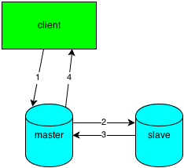

An Introduction To Web Service
tangliu@kingsoft.com
Agenda
- Introduction
- An Example
- Some Solution
Introduction
What's a web service?
A method of communication between two electronic devices over the World Wide Web. A web service is a software function provided at a network address over the web or the cloud (from wiki)
How to do?
Client needs to tell service two information!
- Method Information
Which method?
- Scoping Information
Which scroping?
HTTP
No HTTP, No web. All are based on HTTP!
- HTTP Request
- HTTP Response
HTTP Request
- URL
www.google.com
- Method
GET, POST, PUT, HEAD, DELETE
- Header
User-Agent: curl/7.23.1,...
- Body
Request Data, like hello world
HTTP Response
- Code
200,301,404, ...
- Header
Content-Type: text/html,...
- Body
Response Data, like 404 error
API
Local Program: Posix API, WIN32 API, etc...
Web Program: Web API
API Pattern:
- RPC
http://host/bucket/addFile?name=abc
http://host/bucket/getFile?name=abc
- Restful
post http://host/bucket/abc
get http://host/bucket/abc
Basic for HA Service
- Availability
- Scalability
- Reliability
- Manageability
- etc......
CAP
- Consistency
- Availability
- Partition Tolerance
Simple Prove?
Meaning?
Example
Evolution of the Architecture
for File Storage Web Service
Two Method:
Initial Architecture
FS Service: store file
Client: upload or download file from FS Service directly
I think it's like a FTP.
But when files are too many?
Partition
File: Meta + Data
Data are stored in difference Data Service
Meta Service can find where
How to find?
How to find?
Generality: Hash
- Simple Hash: id(file name) % number(Data Service)
- Consistent Hash
Control and Data Flow
Many Clients download file data through meta service?
- Client request Meta Service to download
- Meta Service return Data Service location
- Client download from Data Service directly
Redundancy
Data Storage may corrupted!!!
Backup, when master failed, use backup service!
Cache
Can download more quickly?
- Cache Expired?
- Cache Consistent?
Load Balancer
Meta Service may also have bottleneck!
Proxy
Use proxy for safer download!!!
Service HA
Using Linux-HA
Heartbeat
Keepalived
MYSQL HA
- Master/Slave
- Master/Master
- Semi-Sync Replication
- MYSQL Cluster, etc...
Semi-Sync Replication
